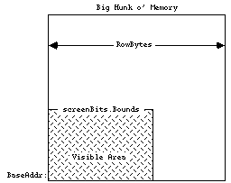
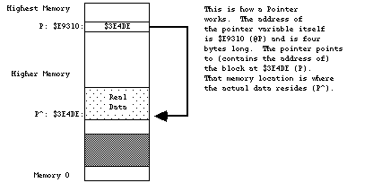
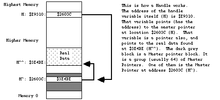
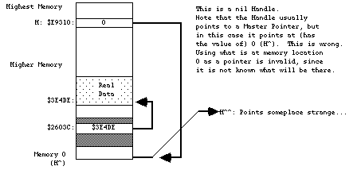
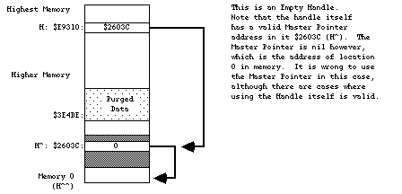

Legacy Document
Important: This document is part of the Legacy section of the ADC Reference Library. This information should not be used for new development.
Current information on this Reference Library topic can be found here:
ADC Home > Reference Library > Technical Notes > Legacy Documents > Mac OS 9 & Earlier >
Important: This document is part of the Legacy section of the ADC Reference Library. This information should not be used for new development.
Current information on this Reference Library topic can be found here:
|
IntroductionWe've tried to explain the issues in depth, but recognize that not everyone is interested in every issue. For example, if your application is not copy protected, you're probably not very interested in the section on copy protection. That's why we've included the outline form of the technical note. The first two pages outline the problems and the solutions that are detailed later. Feel free to skip around at will, but remember that we're sending this enormous technical note because the suggestions it provides may save you hasty compatibility revisions when we announce a new machine. We know it's a lot, and we're here to help you if you need it. Our address (electronic and physical) is on page two - contact us with any questions -that's what we're here for! Compatibility: the outlineDon't assume the screen is a fixed sizeTo get the screen size:
Don't assume the screen is in a fixed locationTo get the screen location:
Don't assume that
|
DragWindow (myWindowPtr, theEvent.where, boundsRect); |
This is bad because it is never necessary to specifically put in the
bounding rectangle for the screen. On a Macintosh XL for example, the screen
size is 760x364 (and sometimes 608x431 with alternate hardware). If a program
uses the hard-coded 0,0,342,512 as a bounding rectangle, end users will not be
able to move their windows past the fictitious boundary of 512. If something
similar were done to the GrowWindow call, it would make it impossible
for users to grow their window to fill the entire screen. (Always a saddening
waste of valuable screen real-estate.)
Assuming screen size makes it more difficult to use the program on Macintoshes with big screens, by making it difficult to grow or move windows, or by drawing in strange places where they should not be drawing (outside of windows). Consider the case of running on a Macintosh equipped with one of the full page displays, or Ultra-Large screens. No one who paid for a big screen wants to be restricted to using only the upper-left corner of it.
Never hard code the numbers 512 and 342 for screen dimensions. You should avoid using constants for system values that can change. Parameters like these are nearly always available in a dynamic fashion. Programs should read the appropriate variables while the program is running (at run-time, not at compile time).
Here's how smart programs get the screen dimensions:
InitGraf(@thePort); { QuickDraw global variables have to be initialized.}
...
boundsRect := screenBits.bounds; { The Real way to get screen size }
{ Use QuickDraw global variable. }
|
This is smart, because the program never has to know specifically what the
numbers are. All references to rectangles that need to be related to the screen
(like the drag and grow areas of windows) should use screenBits.bounds
to avoid worrying about the screen size.
Note that this does not do anything remotely like assume that "if the computer is not a standard Macintosh, then it must be an XL." Special casing for the various versions of the Macintosh has always been suspicious at best; it is now grounds for breaking. (At least with respect to screen dimensions.)
By the way, remember to take into account the menu bar height when using this
rectangle. On 128K ROMs (and later) you can use the low-memory global mBarHeight
(a word at $BAA). But since we didn't provide a low-memory global for the menu bar height
in the 64K ROMs, you'll have to hard code it to 20 ($14). (You're not the
only ones toforget the future holds changes.)
The easiest way is to exercise your program on one of the Ultra-Large screen Macintoshes. There should be no restrictions on sizing or moving the windows, and all drawing should have no problems. If there are any anomalies in the program's usage, there is probably a lurking problem. Also, do a global find in the source code to see if the numbers 512 or 342 occur in the program. If so, and if they are in reference to the screen, excise them.
Some programs use a fixed screen address, assuming that the screen location
will be the same on various incarnations of the Macintosh. This is not the case. For example,
the screen is located at memory location $1A700 on a 128K Macintosh, at $7A700
on a 512K Macintosh, at $F8000 on the Macintosh XL, and at $FA700
on the Macintosh Plus.
When a program relies upon the screen being in a fixed location, Murphy's Law dictates that an unknowing user will run it upon a computer with the screen in a different location. This usually causes the system to crash, since the offending program will write to memory that was used for something important. Programs that crash have been proven to be less useful than those that don't.
Suffice it to say that there is no way that the address of the screen will remain static, but there are rare occasions where it is necessary to go directly to the screen memory. On these occasions, there are bad ways and not-as-bad ways to do it. A bad way:
myScreenBase := Pointer ($7A700); { not good. Hard-coded number. }
|
A not-as-bad way:
InitGraf(@thePort); { do this only once in a program. }
...
myScreenBase := screenBits.baseAddr; { Good. Always works. }
{Yet another QuickDraw global variable}
|
Using the latter approach is guaranteed to work, since QuickDraw has to know where to draw, and the operating system tells QuickDraw where the screen can be found. When in doubt, ask QuickDraw. This will work on Macintosh computers from now until forever, so if you use this approach you won't have to revise your program just because the screen moved in memory.
If you have a program (such as an INIT) that cannot rely upon QuickDraw being
initialized (via InitGraf), then it is possible to use the ScrnBase
low-memory global variable (a long word at $824). This method runs a
distant second to asking QuickDraw, but is sometimes necessary.
The easiest way to find base screeners is to run the offending program on
machines that have different screen addresses. If any addresses are being used in a base manner,
the system will usually crash. The offending program may also occasionally refuse
to draw. Some programs afflicted with this problem may also hang the computer
(sometimes known as accessing funny space). Also, do a global find on the
source code to look for numbers like $7A700 or $1A700.
When found, exercise caution while altering the offending lines.
According to the definition of a bitMap found in Inside
Macintosh (p I-144), you can see that rowBytes is the number of actual bytes
in memory that are used to determine the bitMap. We know the screen is just a big hunk
of memory, and we know that QuickDraw uses that memory as a bitMap. rowBytes accomplishes
the translation of a big hunk of memory into a bitMap. To do this, rowBytestells
the system how long a given row is in memory and, more importantly, where in memory
the next row starts. For conventional Macintoshes, rowBytes
(bytes per Row) * 8 (Pixels per Byte) gives the final horizontal
width of the screen as Pixels per Row. This does not have to be
the case. It is possible to have a Macintosh screen where the
rowBytes extends beyond what is actually visible
on the screen. You can think of it as having the screen
looking in on a larger bitMap.
Diagrammatically, it might
look like:

With an Ultra-Large screen, the number of bytes used for screen memory may be
in the 500,000 byte range. Whenever calculations are being made to find various locations
in the screen, the variables used should be able to handle larger screen sizes. For example,
a 16 bit Integer will not be able to hold the 500,000 number, so a LongInt
would be required. Do not assume that the screen size is 21,888 bytes long.
bitMaps can be larger than 32K or 64K.
Programs that assume that all of the bytes in a row are visible may make
bad calculations, causing drawing routines to produce unusual, and unreadable,
results. Also, programs that use the rowBytes to figure out the width
of the screen rectangle will find that their calculated rectangle is not the
real screenBits.Bounds. Drawing into areas that are not visible
will not necessarily crash the computer, but it will probably give
erroneous results, and displays that don't match the normal
output of the program.
Programs that assume that the number of bytes in the screen memory will be less than 32768 may have problems drawing into Ultra-Large screens, since those screens will often have more memory than a normal Macintosh screen. These particular problems do not evidence themselves by crashing the system. They generally appear as loss of functionality (not being able to move a window to the bottom of the screen), or as drawing routines that no longer look correct. These problems can prevent an otherwise wonderful program from being used.
In any calculations, the rowBytes variable should be thought of as the
way to get to the next row on the screen. This is distinct from thinking of it
as the width of the screen. The width should always be found from
screenBits.bounds.right- screenBits.bounds.left.
It is also inappropriate to use the rectangle to decide how many bytes there are on a row. Programs that do something like:
bytesLine := screenBits.bounds.right DIV 8; { bad use of bounds }
rightSide := screenBits.rowBytes * 8; { bad use of rowBytes }
|
will find that the screen may have more rowBytes than previously
thought. The best way to avoid being a row byter is to use the proper
variables for the proper things. Without the proper mathematical
basis to the screen, life becomes much more difficult. Always do
things like:
bytesLine := screenBits.rowBytes; { always the correct number }
rightSide := screenBits.bounds.right; { always the correct screen size }
|
It is sometimes necessary to do calculations involving the screen. If so, be
sure to use LongInts for all the math, and be sure to use the right variables
(i.e., use LongInts). For example, if we need to find the address of the
500th row in the screen (500 lines from the top):
VAR myAddress: LongInt;
myRow: LongInt; { so the calculations don't round off. }
myOffset: LongInt; { could easily be over 32768 ... }
bytesLine: LongInt;
|
myAddress := ord4(screenBits.baseAddr);{start w/the real base address }
myRow := 500; {the row we want to address }
bytesLine := screenBits.rowBytes; {the real bytes per line }
myOffset := myRow * bytesLine; {lines * bytes per lines gives bytes }
myAddress := myAddress + myOffset; {final address of the 500th line }
|
This is not something you want to do if you can possibly avoid it, but if you
simply must go directly to the screen, be careful. The big-screen machines
(Ultra-Large screens) will thank you for it. If QuickDraw cannot be
initialized, there is also the low-memory global screenRow
(a word at $106) that will give you the
current rowBytes.
To find current problems with row byter programs, run them on a machine
equipped with Ultra-Large screens and see if any anomalies crop up. Look for
drawing sequences that don't work right, and for drawing that clips to an imaginary edge.
For source-level inspection, look for uses of the rowBytes variables and be sure
that they are being used in a mathematically sound fashion. Be highly suspicious of any
code that uses rowBytes for the screen width. Any calculations involving those
system variables should be closely inspected for round-off errors and improper use.
Search for the number 8. If it is being used in a calculation where it is the
number of bits per byte, then watch that code closely for
improper conceptualization. This is code that could
leap out and grab you by the throat at anytime.
Be careful!
nil Handles or nil PointersA nil pointer is a pointer that has a value of 0. Recognize that
pointers are merely addresses in memory. This means that a nil
pointer is pointing to memory location 0. Any use of memory location 0 is
strictly forbidden, since it is owned by Motorola. Trespassers may be shot on
sight, but they may not die until much later. Sometimes trespassers are only
wounded and act strangely. Any use of memory location 0 can be considered a
bug, since there are no valid reasons for Macintosh programs to read or write
to that memory. However, nil pointers themselves are not necessarily
bad. It is occasionally necessary to pass nil pointers to ROM
routines. This should not be confused with reading or writing to memory
location 0. A pointer normally points to (contains the address of) a location
in memory. It could look like this:

If a pointer has been cleared to nil, it will point to memory location
0. This is OK as long as the program does not try to read from or write to
that pointer. An example of a nil pointer could look like:

nil handles are related to the problem, since a handle is merely the address of a pointer (or a pointer to a pointer). An example of what a normal handle might look like is:


If the memory at 0 contains an odd number (numerically odd), then using it as a
pointer will cause a system error with ID=2. This can be very useful, since that tells
you exactly where the program is using this illegal handle, making it easy to fix. Unfortunately, there are
cases where it is appropriate to pass a nil handle to ROM routines (such as GetScrap).
These cases are rare, and it is never legal to read from or write to a nil handle.
There is also the case of an empty handle. An empty handle is one where the
handle itself (the first pointer) points to a valid place in memory; that place in memory
is also a pointer, and if it is nil the entire handle is termed empty.
There are occasions where it is necessary to use the handle itself, but using
the nil pointer that it contains is not valid. An example of an
empty handle could be:

The use of nil pointers can lead to the use of make-believe data.
This make-believe data often changes for different versions of the computer. This changing
data makes it difficult to predict what will happen when a program uses nil pointers.
Programs may not crash as a result of using a nil pointer, and they may behave in a
consistent fashion. This does not mean that there isn't a bug. This merely means that
the program is lucky, and that it should be playing the lottery, not running on
a Macintosh. If a program acts differently on different versions of
the Macintosh, you should think "could there be a nasty nil
pointer problem here?" Use of a nil handle usually
culminates in reading or writing to obscure places in memory.
As an example:
VAR myHandle: TEHandle;
myHandle := nil;
|
That's pretty straightforward, so what's the problem? If you do something like:
memory location zero will be used as a pointer to give the address of a TextEdit record. What if that memory location points to something in the system heap? What if it points to the sound buffer? In cases like these, eight bytes of rectangle data will be written to wherever memory location 0 points.
Use of a nil handle will never be useful. This memory is reserved and
used by the 68000 for various interrupt vectors and Valuable Stuff. This
Valuable Stuff is composed of things that you definitely do not want to change.
When changed, the 68000 finds out, and decides to get back at your program in
the most strange and wonderful ways. These strange results can range from a
System Error all the way to erasing hard disks and destroying files. There
really is no limit to the havoc that can be wreaked. This tends to keep the
users on the edge of their seat, but this is not really the desired effect. As
noted above, it won't necessarily cause traumatic results. A program can be
doing naughty things and not get caught. This is still a bug that needs to be
fixed, since it is nearly guaranteed to give different results on different
versions of the Macintosh. Programs exhibiting schizophrenia have been proven
to be less enjoyable to use.
Whenever a program uses pointers and handles, it should ensure that the pointer
or handle will not be nil. This could be termed defensive
programming, since it assumes that everyone is out to get the program (which is
not far from the truth on the Macintosh). You should always check the result
of routines that claim to pass back a handle. If they pass you back a
nil handle, you could get in trouble if you use them. Don't trust the
ROM. The following example of a defensive use of a handle involves the
Resource Manager. The Resource Manager passes back a handle to the resource
data. There are any number of places where it may be forced to pass back a
nil handle. For example:
myRezzie := MyHandle(GetResource(myResType, myResNumber)); { could be missing...}
IF myRezzie = nil THEN ErrorHandler('We almost got Nilled')
|
As another example, think of how handles can be purged from memory in tight memory conditions. If a block is marked purgeable, the Memory Manager may throw it away at any time. This creates an empty handle. The defensive programmer will always make sure that the handles being used are not empty.
VAR myRezzie: myHandle;
myRezzie := myHandle(GetResource(myResType, myResNumber)); { could be missing... }
IF myRezzie = nil THEN ErrorHandler('We almost got Nilled')
ELSE myRezzie^^.myRect := newRect; { We know it is OK }
tempHandle := NewHandle (largeBlock); {might dispose a purgeable myRezzie}
IF myRezzie^ = nil THEN LoadResource(Handle(myRezzie)); {Re-load empty handle}
IF ResError = noErr THEN
myRezzie^^.StatusField := OK; { guaranteed not empty, and actually gets
read back in, if necessary }
|
Be especially careful of places where memory is being allocated. The
NewHandle and NewPtr calls will return a nil handle
or pointer if there is not enough memory. If you use that handle or pointer
without checking, you will be guilty of being a Niller.
The best way to find these nasty nil pointer problems is to set memory
location zero to be an odd number (a good choice is 'NIL!' = $4E494C21,
which is numerically odd, as well as personality-wise). Please see M.OV.Debugging
for details on how to do this.
If you use TMON, you can use the extended user area with Discipline.
Discipline will set memory location 0 to 'NIL!' to help catch those nasty
pointer problems. If you use Macsbug, just type SM 0 'NIL!
and go. Realize of course, that if a program has made a transgression and is
actually using nil pointers, this may make the program crash with an
ID=2 system error. This is good! This means that you have found a bug that
may have been causing you untold grief. Once you know where a program crashes,
it is usually very easy to use a debugger to find where the error is in the
source code. When the program is compiled, turn on the debugging labels
(usually a $D+ option). Set memory location 0 to be 'NIL!'. When the program
crashes, look at where the program is executing and see what routine it was in
(from a disassembly). Go back to that routine in the source code and remove
the offending code with a grim smile on your face. Another scurvy bug has been
vanquished. The intoxicating smell of victory wafts around your head.
Another way to find problems is to use a debugger to do a checksum on the first four bytes in memory (from 0 to 3 inclusive). If the program ever traps into the debugger claiming that the memory changed, see which part of the program altered memory location 0. Any code that writes to memory location zero is guilty of high treason against the state and must be removed. Remember to say, "bugs are not my friends."
A fake handle is one that was not manufactured by the system, but was created by the program itself. An example of a fake handle is:
CONST aMem = $100;
VAR myHandle: Handle;
myPointer: Ptr;
|
myPointer := Ptr (aMem); { the address of some memory }
myHandle := @myPointer; {the address of the pointer variable. Very bad.}
|
The normal way to create and use handles is to call the Memory Manager NewHandle function.
A handle that is manufactured by the program is not a legitimate handle as far
as the operating system is concerned. Passing a fake handle to routines that
use handles is a good way to discover the meaning of "Death by ROM." For
example, think how confused the operating system would get if the fake handle
were passed to DisposHandle. What would it dispose? It never
allocated the memory, so how can it release it? Programs that manufacture
handles may find that the operating system is no longer their friend.
When handles are passed to various ROM routines, there is no telling what sorts
of things will be done to the handle. There are any number of normal handle
manipulation calls that the ROM may use, such as SetHandleSize,
HLock, HNoPurge, MoveHHi and so on. Since a program
cannot guarantee that the ROM will not be doing things like this to handles
that the program passes in, it is wise to make sure that a real handle is being
used, so that all these type of operations will work as the ROM expects. For
fake handles, the calls like HLock and SetHandleSize have no
bearing. Fake handles are very easy to create, and they are very bad for the
health of otherwise upstanding programs. Whenever you need a handle, get one
from the Memory Manager.
As a particularly bad use of a fake handle:
VAR myHandle: Handle;
myStuff: myRecord;
myHandle := NewHandle (SIZEOF(myStuff)); { create a new normal handle }
myHandle^ := @myStuff; {YOW! Intended to make myHandle a handle to
the myStuff record. What it really does is
blow up a Master Pointer block, Heap corruption,
and death by Bad Heap. Never do this. }
|
This can be a little confusing, since it is fine to use your own pointers, but very bad to use your own handles. The difference is that handles can move in memory, and pointers cannot, hence the pointers are not dangerous. This does not mean you should use pointers for everything since that causes other problems. It merely means that you have to be careful how you use the handles.
The use of fake handles usually causes system errors, but can be somewhat mysterious in its effects. Fake handles can be particularly hard to track down since they often cause damage that is not uncovered for many minutes of use. Any use of fake handles that causes the heap to be altered will usually crash the system. Heap corruption is a common failure mode. In clinical studies, 9 out of 10 programmers recommend uncorrupted heaps to their users who use heaps.
The correct way to make a handle to some data is to make a copy of the data:
VAR myHandle: Handle;
myStuff: myRecord;
|
errCode := PtrToHand (@myStuff, myHandle, SIZEOF(myStuff));
IF errCode <> noErr THEN ErrorHandler ('Out of memory');
|
Always, always, let the Memory Manager perform operations with handles. Never write code that assigns something to a master pointer, like:
VAR myDeath: Handle;
myDeath^ := stuff; { Don't change the Master pointer. }
|
If there is code like this, it usually means the heap is being corrupted, or a fake handle is being used. It is, however, OK to pass around the handle itself, like:
This is far different than using the ^ operator to accidentally modify
things in the system. Whenever it is necessary to write code to use handles,
be careful. Watch things carefully as they are being written. It is much
easier to be careful on the way in than it is to try to find out why something
is crashing. Be very careful of the @ operator. This operator can
unleash untold problems upon unsuspecting programs. If at all possible, try to
avoid using it, but if it is necessary, be absolutely sure you know what it is
doing. It is particularly dangerous since it turns off the normal type
checking that can help you find errors (in Pascal). In short, don't get crazy
with pointer and handle manipulations, and they won't get crazy with you.
Problems of this form are particularly insidious because it can be very difficult to find them after they have been created. They tend to not crash immediately, but rather to crash sometime long after the real damage has been done. The best way to find these problems is to run the program with Discipline. (Discipline is a programmer's tool that will check all parameters passed to the ROM to see if they are legitimate. Discipline can be found as a stand-alone tool, but the most up-to-date version will be found in the Extended User Area for the TMON debugger. The User Area is public domain, but TMON itself is not. TMON has a number of other useful features, and is well worth the price.) Discipline will check handles that are passed to the ROM to see if they are real handles or not, and if not, will stop the program at the offending call. This can lead you back to the source at a point that may be close to where the bad handle was created. If a program passes the Discipline test, it will be a healthy, robust program with drastically improved odds for compatibility. Programs that do not pass Discipline can sleep poorly at night, knowing that they have broken at least one or two of the "rules."
A way to find programs that are damaging the heap is to use a debugger (TMON or Macsbug) and turn on the Heap Check operation. This will check the heap for errors at each trap call, and if the heap is corrupted will break into the debugger. Hopefully this will be close to where the code is that caused the damage. Unfortunately, it may not be close enough; this will force you to look further back.
Looking in the source code, look for all uses of the @ operator, and
examine the code carefully to see if it is breaking the rules. If it is,
change it to step in line with the rest of the happy programs here in happy
valley. Also, look for any code that changes a master pointer like the
myHandle^ := stuff. Any code of this form is highly suspect, and
probably a member of the Anti-Productivity League. The APL has been accused of
preventing software sales and the rise of the Yen. These problems can be quite
difficult to find at times, but don't give up. These fake handles are high on
the list of guilty parties, and should never be trusted.
Self-modifying code is software that changes itself. Code that alters itself runs into two main groupings: code that modifies the code itself and code that changes the block the code is stored in. Copy protection code often modifies the code itself, to change the way it operates (concealing the meaning of what the code does). Changing the code itself is very tricky, and also prone to having problems, particularly when the microprocessor itself changes. There are third-party upgrades available that add a 68020 to a Macintosh. Because of the 68020's cache, programs that modify themselves stand a good chance of having problems when run on a 68020. This is a compatibility point that should not be missed (nudge, nudge, wink, wink). Code that changes other code (or itself) is prone to be incompatible when the microprocessor changes.
The second group is code that changes the block that the code is stored in. Keeping variables in the CODE segment itself is an example of this. This is uncommon with high-level languages, but it is easy to do in assembly language (using the DC directive). Variables defined in the code itself should be read-only (constants). Code that modifies itself has signed a tacit agreement that says "I'm being tricky, if I die, I'll revise it."
There are now three different versions of the microprocessor, the 68000, 68010, and the 68020. They are intended to be compatible with each other, but may not be compatible with code that modifies itself. As the Macintosh evolves, the system may have compatibility problems with programs that try to "push the envelope."
Well, the obvious answer is to avoid writing self-modifying code. If you feel obliged to write self-modifying code, then you are taking an oath to not complain when you break in the future. But don't worry about accidentally taking the oath: you won't do it without knowing it. If you choose to abuse, you also agree to personal visits from the Apple thought police, who will be hired as soon as we find out.
Run the program on a 68020 system. If it fails, it could be related to this problem, but since there are other bugs that might cause failures, it is not guaranteed to be a self-modifying code problem. Self-modifying code is often used in copy protection, which brings us to the next big topic.
Copy protection is used to make it difficult to make copies of a program. The basic premise is to make it impossible to copy a program with the Finder. This will not be a discussion as to the pros and cons of copy protection. Everyone has an opinion. This will be a description of reality, as it relates to compatibility.
Copy protection itself is not necessarily bad. What is bad is when programs that would otherwise be fully compatible do not work due only to the copy protection. This is very sad, since it requires extra work, revisions to the software, and time lost while the revision is being produced. The users are not generally humored when they can no longer use their programs. Copy protection schemes that fail generally cause system errors when they are run. They also can refuse to run when they should.
The simple answer is to do without copy protection altogether. If you think of compatibility as a probability game, if you leave out the copy protection, your odds of winning skyrocket. As noted above, copy protection is the single biggest reason why programs fail on the various versions of the Macintosh. For those who are required to use copy protection, try to rely on schemes that do not require specific hardware and make sure that the scheme used is not performing illegal operations. If a program runs, an experienced Macintosh programmer armed with a debugger can probably make a copy of it, (no matter how sophisticated the copy protection scheme) so a moderate scheme that does not break the rules is probably a better compatibility bet. The trickier and more devious the scheme, the higher the chance of breaking a rule. Tread lightly.
The easiest way to see if a scheme is being overly tricky is to run it on a Macintosh XL. Since the floppy disk hardware is different this will usually demonstrate an unwanted hardware dependency. Be wary of schemes that don't allow installation on a hard disk. If the program cannot be installed on a hard disk, it may be relying upon things that are prone to change. Don't use schemes that access the hardware directly. All Macintosh software should go through the various managers in the ROM to maintain compatibility. Any code that sidesteps the ROM will be viewed as having said "It's OK to make me revise myself."
All of the Operating System functions, as well as some of the Toolbox functions, will return result codes as the value of the function. Don't ignore these result codes. If a program ignores the result codes, it is possible to have any number of bad things happen to the program. The result code is there to tell the program that something went wrong; if the program ignores the fact that something is wrong, that program will probably be killed by whatever went wrong. (Bugs do not like to be ignored.) If a program checks errors, an anomaly can be nipped in the bud, before something really bizarre happens.
A program that ignores result codes is skipping valuable information. This information can often prevent a program from crashing and keep it from losing data.
How to avoid becoming a skipper
Always write code that is defensive. Assume that everyone and everything is out to kill you. Trust no one. An example of error checking is:
myRezzie := GetResource (myResType, myResId);
IF myRezzie = nil THEN ErrorHandler ('Who stole my resource...');
|
Another example:
fsErrCode := FSOpen ('MyFile', myVRefNum, myFileRefNum);
IF fsErrCode <> noErr THEN ErrorHandler (fsErrCode, 'File error');
|
And another:
myTPPrPort := PrOpenDoc (myTHPrint, nil, nil);
IF PRError <> noErr THEN ErrorHandler (PRError, 'Printing error');
|
Any use of Operating System functions should presume that something nasty can happen, and have code to handle the nasty situations. Printing calls, File Manager calls, Resource Manager calls, and Memory Manager calls are all examples of Operating System functions that should be watched for returning errors. Always, always check the result codes from Memory Manager calls. Big memory machines are pretty common now, and it is easy to get cavalier about memory, but realize that someone will always want to run the program under Switcher, or on smaller Macintoshes. It never hurts to check, and always hurts to ignore it.
This is easy: just do weird things while the program is running. Put in locked or unformatted disks while the program is running. Use unconventional command sequences. Run out of disk space. Run on 128K Macintoshes to see how the program deals with running out of memory. Run under Switcher for the same reason. (Programs that die while running under Switcher are often not Switcher's fault, and are in fact due to faulty memory management.) Print with no printer connected to the Macintosh. Pop disks out of the drives with the Command-Shift sequence, and see if the program can deal with no disk. When a disk-switch dialog comes up, press Command-period to pass back an error to the requesting program (128K ROMs only). Torturing otherwise well- behaved programs can be quite enjoyable, and a number of users enjoy torturing the program as much as the program enjoys torturing them. For the truly malicious, run the debugger and alter error codes as they come back from various routines. Sure it's a dirty low-down rotten thing to do to a program, but we want to see how far we can push the program. (This is also a good way to check your error handling.) It's one thing to be an optimist, but it's quite another to assume that nothing will go wrong while a program is running.
Sometimes it is necessary to go directly to the Macintosh hardware to accomplish a specific task for which there is no ROM support. Early hard disks that used the serial ports had no ROM support. Those disks needed to use the SCC chip (the 8530 communication chip) in a high-speed clocked fashion. Although it is a valid function, it is not something that is supported in the ROM. It was therefore necessary to go play with the SCC chip directly, setting and testing various hardware registers in the chip itself. Another example of a valid function that has no ROM support is the use of the alternate video page for page-flipping animation. Since there is no ROM call to flip pages, it is necessary to go play with the right bit in the VIA chip (6522 Versatile Interface Adapter). Going directly to the hardware does not automatically throw a program into the incompatible group, but it certainly lowers its odds.
Going directly to the hardware poses any number of problems for enlightened programs that are trying to maintain compatibility across the various versions of the Macintosh. On the Macintosh XL for example, a lot of the hardware is found in different locations, and in some cases the hardware doesn't exist. On the XL there is no sound chip. Programs that go directly to the sound hardware will find they don't work correctly on an XL. If the same program were to go through the Sound Manager, it would work fine, although the sound would not be the same as expected. Since the Macintosh is heavily oriented to the software side of things, expecting various hardware to always be available is not a safe bet. Choosy programmers choose to leave the hardware to the ROM.
Don't read or write the hardware. Exhaust every possible conventional approach before deciding to really get down and dirty. If there is a Manager in the ROM for the operation you wish to perform, it is far better to use the Manager than to go directly to the hardware. Compatibility at the hardware level can very rarely be maintained, but compatibility at the Manager level is a prime consideration. If a program is down to the last ditch effort, and cannot get the support from the ROM that is desired, then access the hardware in an enlightened approach. The really bad way to do it:
VIA := Pointer ($EFE1FE); { sure it's the base address today...}
{ This is bad. Hard-coded number. }
|
The with-it, inspired programmer of the eighties does something like:
VAR VIA: LongPointer;
VIABase: LongInt;
VIA := Pointer ($1D4); { the address of the low-memory global. }
VIABase := VIA^; { get the low-memory variable's value }
{ Now VIABase has the address of the chip }
|
The point here is that the best way to get the address of a hardware chip is to ask the system where it currently is to be found. The system always knows where the pieces of the system are, and will always know for every incarnation of the Macintosh. There are low-memory global variables for all of the pieces of hardware currently found in the Macintosh. This includes the VIA, the SCC, the Sound Chip, the IWM, and the video display. Whenever you are stuck with going to the hardware, use the low-memory globals. The fact that a program goes directly to the hardware means that it is risking imminent incompatibility, but using the low-memory global will ensure that the program has the best odds. It's like going to Las Vegas: if you don't gamble at all, you don't lose any money; if you have to gamble, play the game that you lose the least on.
Run the suspicious program on the Macintosh XL. Nearly all of the hardware is in a different memory location on the XL. If a program has a hard-coded hardware address in it, it will fail. It may crash, or it might not perform the desired task, but it won't work as advertised. This unfortunately, is not a completely legitimate test, since the XL does not have some of the hardware of other Macintoshes, and some of the hardware that is there has the register mapping different. This means that it is possible to play by the rule of using the low-memory global and still be incompatible.
Occasionally during the life of a Macintosh programmer, there comes a time when
it is necessary to bite the bullet and use a low-memory global. These are very
sad days, since it has been demonstrated (by history) that low-memory global
variables are a mysterious lot, and not altogether friendly. One fellow in
particular is known as ROM85, a word located at $28E. This
particular variable has been documented as the way to determine if a program is
running on the 128K ROMs or not. Notably, the top most bit of that word is the
determining bit. This means that the rest of the bits in that word are
reserved, since nothing is described about any further bits. Remember, if it
doesn't say, assume it's reserved. If it's reserved, don't depend upon it.
Take the cautious way out and assume that the other bits that aren't documented
are used for Switcher local variables, or something equally wild. An example
of a bad way to do the comparison is:
VAR Rom85Ptr: WordPtr; |
Rom85Ptr := Pointer ($28E); { point at the low-memory global }
IF Rom85Ptr^ = $7FFF THEN RomsAre64 := False { Bad test. }
|
This is a bad test since the comparison is testing the value of all of the bits, not only the one that is valid. Since the other bits are undocumented, it is impossible to know what they are used for. Assume they are used for something that is arbitrarily random, and take the safe way out.
Rom85Ptr := Pointer ($28E); { point at the low-memory global }
IF BitTst(ROM85Ptr,0) THEN RomsAre64 := True {Good--tests only hi-bit}
ELSE RomsAre64 := False;
|
This technique will ensure that when those bits are documented, your program won't be using them for the wrong things. Beware of trojan bits.
Don't use undocumented stuff. Be very careful when you use anything out of the
ordinary stream of a high-level language. For instance, in the ROM85
case, it is very easy to make the mistake of checking for an absolute value
instead of testing the actual bit that encodes the information. Whenever a
program is using low-memory globals, be sure that only the information desired
is being used, and not some undocumented (and hence reserved) bits. It's not
always easy to determine what is reserved and what isn't, so conservative
programmers always use as little as possible. Be wary of the strange bits, and
accept rides from none of them. The ride you take might cause you to revise
your program.
Since there are such a multitude of possible places to get killed, there is no
simple way to see what programs are using illegal bits. As time goes by it
will be possible to find more of these cases by running on various versions of
the Macintosh, but there will probably never be a comprehensive way of finding
out who is accepting strange rides, and who is not. Whenever the use of a bit
changes from reserved status to active, it will be possible to find those bugs
via extensive testing. From a source level, it would be advisable to look over
any use of low-memory globals, and eye them closely for inappropriate bit
usage. Do a global search for the $ (which describes those ubiquitous
hexadecimal numbers), and when found see if the use of the number is
appropriate. Trust no one that is not known. If they are documented, they
will stay where they are, and have the same meaning. Be very careful in realms
that are undocumented. Bits that suddenly jump from reserved to active status
have been known to cause more than one program to have a sudden anxiety attack.
It is very unnerving to watch a program go from calm and reassuring to rabid
status. Users have been known to drop their keyboards in sudden shock (which
is bad on the keyboards).
So what does all this mean? It means that it is getting harder and harder to get away with minor bugs in programs. The minor bugs of yesterday are the major ones of today. No one will yell at you for having bugs in your program, since all programs have bugs of one form or another. The goal should be to make the programs run as smoothly and effortlessly as possible. The end-users will never object to bug-reduced programs.
What is the best way to test a program? A reasonably comprehensive test is to exercise all of the program's functions under the following situations:
If a program can live through all of this with no Discipline traps, no checksum breaks, no system errors, no anomalies, no data loss and still get useful work done, then you deserve a gold medal for programming excellence. Maybe even an extra medal for conduct above and beyond the call of duty. In any case, you will know that you have done your job about as well as it can be done, with today's version of the rules, and today's programming tools.
Sounds like a foreboding task, doesn't it? The engineers in Macintosh Technical Support are available to help you with compatibility issues (we won't always be able to talk about new products, since we love our jobs, but we can give you some hints about compatibility with what the future holds).
Good luck.
|
|
Acrobat version of this Note (380K). |
|